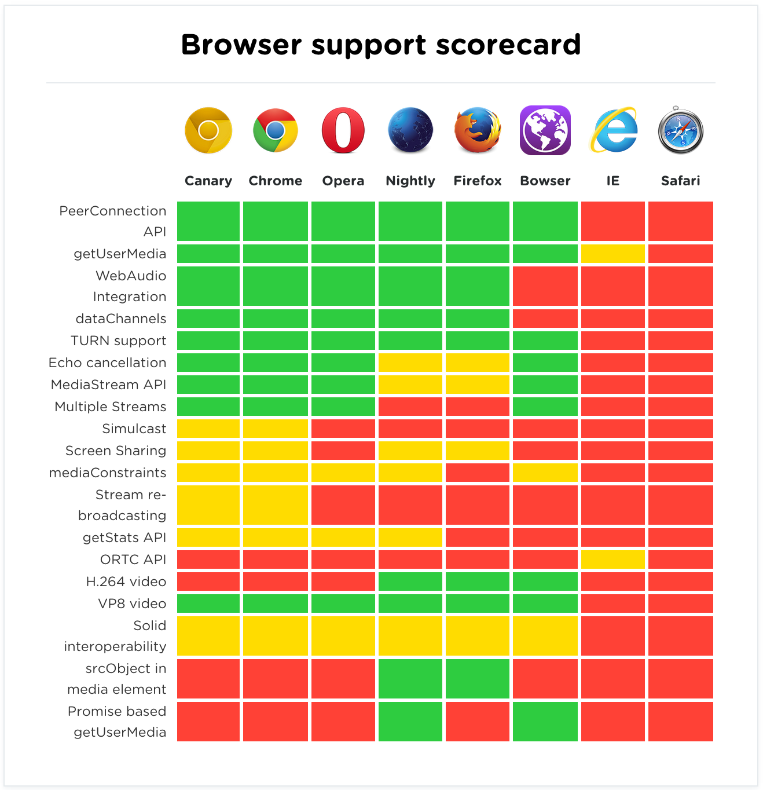
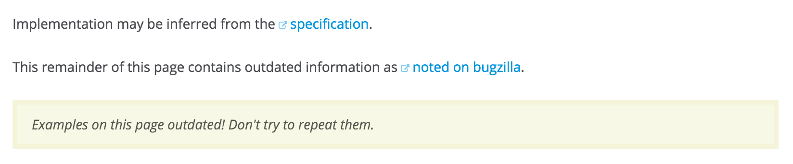
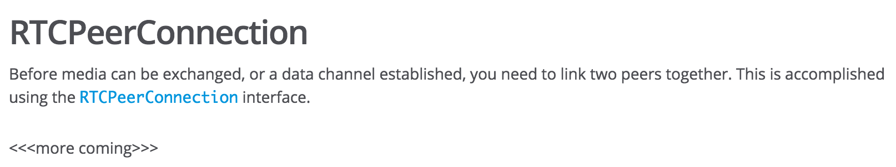

A little bit about myself, first: I'm a product engineer at a company called Stripe. We build an API and related tools to help developers and businesses process all sorts of payments, from credit card payments to ACH, Alipay to ACH.
We're located in sunny San Francisco, California, and I'm currently in one of our conference rooms. This one's called Zebra, as you can probably tell from the pictures behind me.
Now, we don't actually use WebRTC here at Stripe, but we do use Google Hangouts for our ultra-time-sensitive communications.
..random data center in Dowles, Oregon.
That's over 600 miles (or 1000 km) away!
but once it's there, I no longer have control over what I sent! It's out there. On someone random lurker's (or Google's) server!
And after all that, it still needs to make that 600 mile/1000 km journey back to Stripe, where my message will end up 20 feet from where it started.
So, let's see if we can't eliminate some of parts of this process.
http://cdn.peerjs.com/demo/videochat/demo.html
// Purple: I want to have a video chat with my friend!
var purpleConnection = new RTCPeerConnection(...);
// I'll create a data channel to relay chat messages with my friend.
var p2bChat = purpleConnection.createDataChannel('CHAT', ...);
// and another one for sending files.
var p2bFiles = purpleConnection.createDataChannel('FILES', ...);
// I'll create a video/audio stream so we can videochat.
navigator.getUserMedia({audio: true, video: true}, function(stream) {
// And I'll add that stream to my connection.
purpleConnection.addStream(stream);
...
});
What I'm about to explain is a very simplified version of the raw WebRTC API, so if something seems magical right now to you, I'll probably come back and fill in the blanks later.
// I want to talk to Blue, so I'll make Blue an offer to chat.
purpleConnection.createOffer(function(offer) {
// I'll save it locally...
purpleConnection.setLocalDescription(offer, function() {
// ...and pass it on to Blue.
magicallySend(offer, blueClient);
// we'll talk about our magical sending apparatus in a bit.
}, errorHandler);
});
So now that PURPLE has decided who he want to talk to and how I'm going to talk to you, I'll create something called an
"offer".
// Blue: I've magically received an offer, and I want to chat.
var blueConnection = new RTCPeerConnection(...);
blueConnection.setRemoteDescription(purpleOffer, function() {
// I'll share my own media, but I only want to share video.
navigator.getUserMedia({video: true}, function(stream) {
blueConnection.addStream(stream);
blueConnection.createAnswer(function(answer) {
blueConnection.setLocalDescription(answer, function() {
magicallySend(answer, purpleClient);
}, errorHandler);
});
});
}, errorHandler);
Blue magically receives purple's offer, and she decides to answer.
Blue is a pretty shy, so she's not going to add her camera stream.
And at various points during this process, events for streams and data channels
would've fired. But at this point they're usable.
So let's take a bit of a mental break, because we all fell our eyes glazing over
when we see code on slides.

iswebrtcreadyyet.com
(&yet)
In this really cool browser support table from iswebrtcreadyyet.com, you
can see that there's a lot of red
and yellow. and these are the parts you really end up pulling your hair over.
They're parts of the API that are not fully up to spec or not interoperable.
iswebrtcreadyyet.com
(&yet)
Compared to the browser scorecard from almost a year ago when I first gave this talk, there's not an amazing amount of growth in percentage of the green portions. A lot of the work on WebRTC in recent months has been in nailing down the API and in supporting a broader range of data channel and media stream options.


Similarly, if you try to find info about the webRTC apis on mdn, you might first get a page that tells you that it's outdated...
Last year, there was an issue filed on PeerJS, where mobile devices on Chrome
31/32 could not communicate with desktop browsers of the same version.
In Chrome 31, SCTP transport, the type of transport we wanted to see, because that was what was in desktop browsers, was indeed behind a flag, so this was
somewhat expected. But even with the flag enabled, I couldn't get a WebRTC connection to be successful
So I search the equivalent of stackoverflow for webrtc: the
webrtc-discuss google
group.
I spent a good 5 minutes getting to this page from the last because google
groups now has google plus tipsies hanging around
Issue #138
The bug today? It's closed, but I never fixed it or anything. I wrestled with a few hacks to detect whether
SCTP was really enabled, but nothing felt satisfying. Eventually I decided that it wasn't worth the time. Android for Chrome would just roll out their fixes soon anyways. And indeed, now we're on like version 40 of chrome, so it's no longer an issue!
// A simple config for an RTCPeerConnection...
var pcDotDotDot2 = {'iceServers': [
{ url: 'stun:stun.l.google.com:19302' },
{ url: 'turn:homeo@turn.bistri.com:80', credential: 'homeo' }
]};
// What it looks like for some older versions of some browsers...
var pcDotDotDot1 = {'iceServers': [
{ url: 'stun:23.21.150.121:19302' }
]};
// For a UDP data channel on some browsers...
var dcDotDotDot1 = {
maxRetransmits: 0,
ordered: false
};
// For a UDP data channel on older versions of some browsers...
var dcDotDotDot2 = {
reliable: false
};
even more servers, right?
You'll notice that the two servers passed in are a STUN and a TURN server,
respectively. Let's talk a bit about what those are.
But it doesn't have to be
that scary.
(WebRTC can
be easy, remember?)
So at this point you're probably like, "But the first slide of the talk says that WebRTC can be easy! And all you're doing is scaring me!"
Here are a few that have been around.